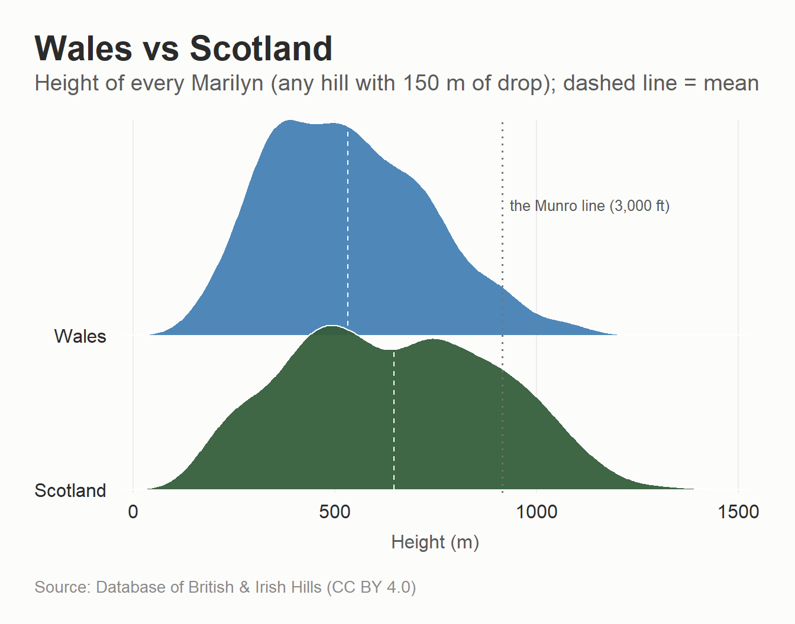
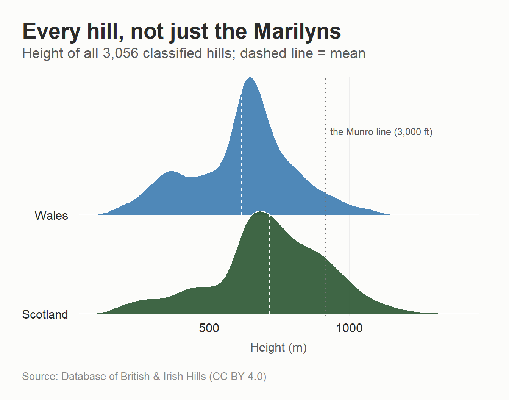
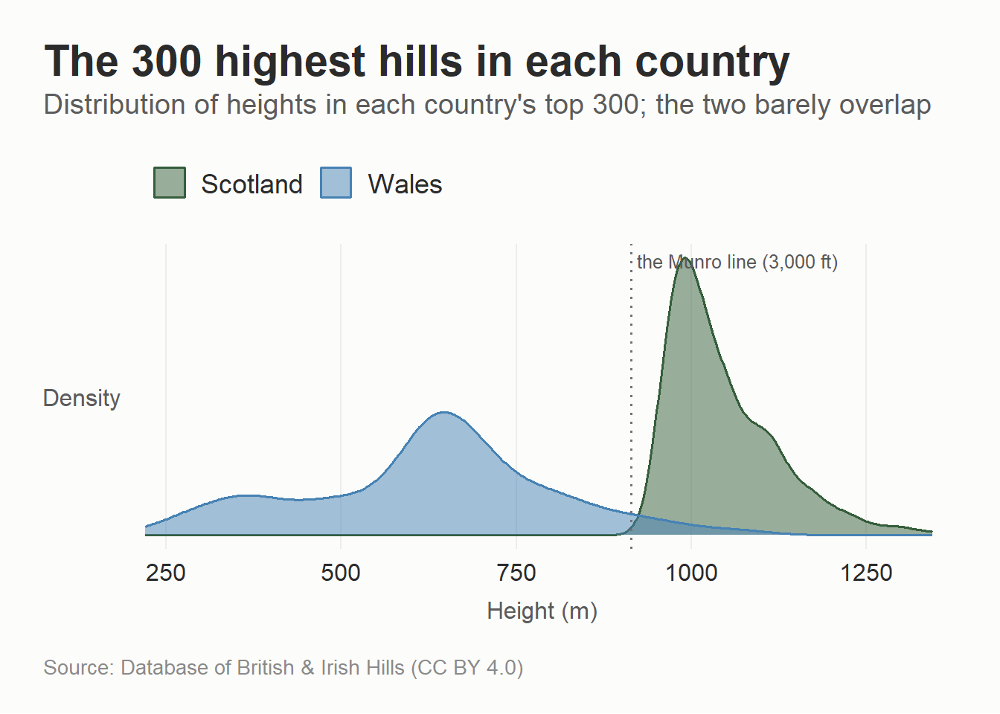
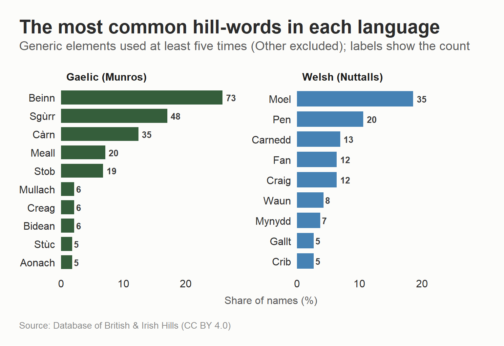
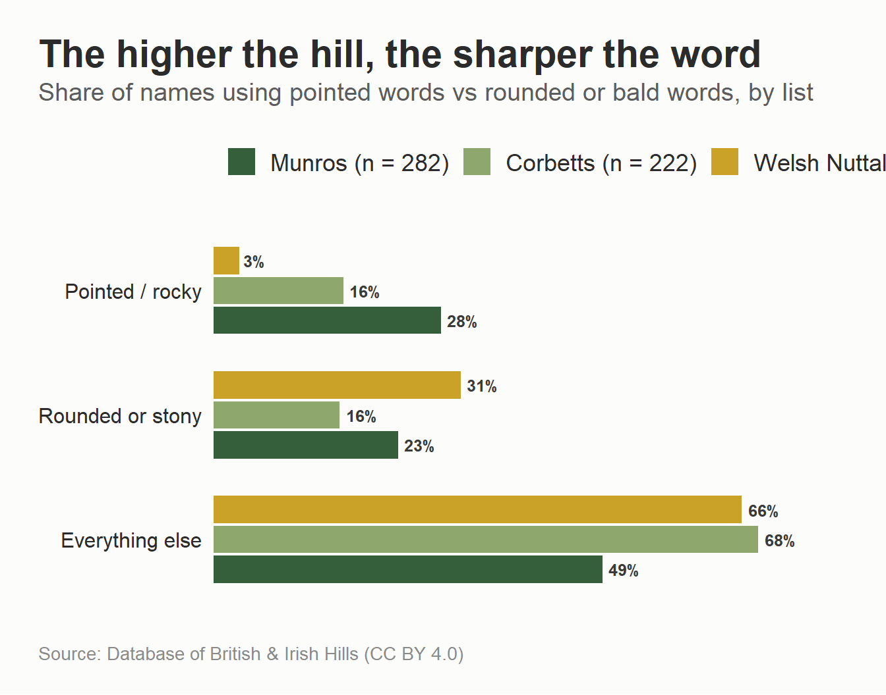
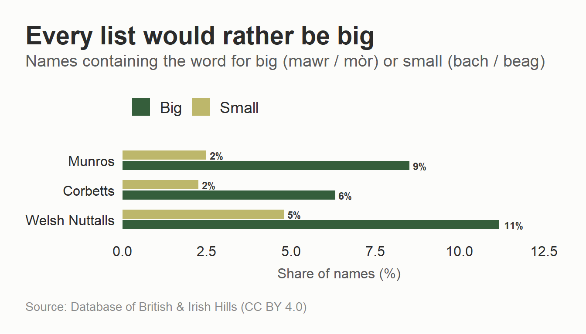

This blog was written using Claude Fable 5 and Opus 4.8
I was supposed to spend my holiday in Sutherland bagging Corbetts but the Scottish weather forecast (and in particular the wind), is so bad that I cancelled and I am going to Wales to walk in the Eryri National Park, which also means I have a new excuse for mountain graphs. I have previously done a post on the Munros then the Corbetts, then went linguistics nerd on the Gaelic of the Munro names. This time the question is how the Scottish and Welsh hills compare, and whether Welsh describes its mountains the way Gaelic does.
Whilst there’s some info out there, there isn’t the same walkhighlands data for Wales as there is for Scotland (because, and I don’t know if I’ve mentioned this, walkhighlands is the best free thing on the internet and we’re lucky to have them in Scotland), so I’ve stuck to the Database of British and Irish Hills.
On the language side, whilst my wife and her family are Gaelic speakers, absolutely nobody in this house speaks Welsh, so I am even more reliant on published glossaries than last time. The translations here are Claude Opus .8 using Myrddyn Phillips’ Welsh (Cymraeg) for Hillwalkers and the Ordnance Survey’s guide to Welsh place names. If we’ve mangled any Welsh, I apologise, and I welcome corrections.
Data sources
The previous posts used the standalone Munro and Corbett tables, but for this one I am using the full DoBIH database and some variables I haven’t used before. The most useful of these is drop (also called prominence), which is how far you descend from a summit before you can start climbing anything higher.
The classifications of hills here are Munros (Scottish hills over 3,000 ft), Corbetts (Scottish hills between 2,500 and 3,000 ft with 500 ft of drop), Furths (the 3,000 ft hills furth of Scotland, which is how the SMC says “abroad”), Hewitts (hills in England, Wales and Ireland over 2,000 ft with at least 30 m drop), Nuttalls (over 2,000 ft with a more generous 15 m drop), Marilyns (any hill with 150 m drop regardless of height), and Simms (over 600 m with 30 m drop).
Show code
library(tidyverse)library(stringi)library(flextable)library(ggridges)library(scales)library(sf)library(rnaturalearth)# The nature palette from the previous postsnature_6 <-c("#355E3B", "#4B4F58", "#4682B4", "#8E6C88", "#E07B39", "#BDB76B")nature_2 <-c("#355E3B", "#4682B4")# Classification codes are comma-separated in one column, with s (sub) and# x (deleted) prefixes, so "M" mustn't match "MT", "Ma", or "sM"has_class <-function(classification, code) {str_detect(classification, paste0("(^|,)", code, "(,|$)"))}if (!file.exists("dobih_scotland_wales.csv")) { tmp <-tempfile(fileext =".zip")download.file("https://www.hills-database.co.uk/hillcsv.zip", tmp, mode ="wb") files <-unzip(tmp, exdir =tempdir())read_csv(files[str_detect(files, "csv$")][1]) |> janitor::clean_names() |>filter(country %in%c("S", "W")) |>mutate(munro =has_class(classification, "M"),corbett =has_class(classification, "C"),furth =has_class(classification, "F"),hewitt =has_class(classification, "Hew"),nuttall =has_class(classification, "N"),marilyn =has_class(classification, "Ma"),simm =has_class(classification, "Sim") ) |>filter(munro | corbett | furth | hewitt | nuttall | marilyn | simm) |>select(number, name, metres, drop, classification, country, county, xcoord, ycoord, munro:simm) |>write_csv("dobih_scotland_wales.csv")}hills <-read_csv("dobih_scotland_wales.csv") |>mutate(country_name =if_else(country =="S", "Scotland", "Wales"),# the committed CSV predates the corbett column, so derive it from# classification, which is retained; a fresh download gets it abovecorbett =has_class(classification, "C"))munros <- hills |>filter(country =="S", munro)corbetts <- hills |>filter(country =="S", corbett)welsh_nut <- hills |>filter(country =="W", nuttall)
To make it a fair comparison this uses Marilyns, because the Marilyn is the only definition on that list that is identical in both countries - 150 m of drop, no height requirement. Scotland has 1,218 of them and Wales has 159, which indicates the difference in geography itself, but here’s the height distribution with the Munro line marked.
Show code
marilyns <- hills |>filter(marilyn)ggplot(marilyns, aes(metres, country_name, fill = country_name)) +geom_density_ridges(quantile_lines =TRUE, quantile_fun = mean,vline_linetype ="dashed",colour ="white", linewidth =0.4,scale =1.4, alpha =0.95) +geom_vline(xintercept =914.4, linetype ="dotted", colour ="grey45") +annotate("text", x =914.4, y =2.85, label ="the Munro line (3,000 ft)",hjust =-0.05, size =3.4, colour ="grey35") +scale_fill_manual(values = nature_2, guide ="none") +scale_y_discrete(expand =c(0.02, 0)) +scale_x_continuous(expand =c(0.01, 0)) +labs(x ="Height (m)", y =NULL,title ="Wales vs Scotland",subtitle ="Height of every Marilyn (any hill with 150 m of drop); dashed line = mean",caption = hill_cap) +theme_munro() +theme(panel.grid.major.x =element_line(colour ="#EDEDED", linewidth =0.4))

The average hill is 646 m for Scotland and 532 m for Wales, but this probably undersells the difference. Yr Wyddfa (Snowdon), at 1,085 m the highest point in Wales, would rank 57th among the Munros, and Scotland has 42 Marilyns above it.
The Marilyn cut of 150 m of drop actually throws away a lot of Scotland’s high ground, because a 3,000 ft summit that sits on the shoulder of a bigger hill never clears the drop and so never counts. Drop that filter and plot every hill in the dataset, and the same shape holds only more so, Scotland has more of everything and much more of it high up.
Show code
ggplot(hills, aes(metres, country_name, fill = country_name)) +geom_density_ridges(quantile_lines =TRUE, quantile_fun = mean,vline_linetype ="dashed",colour ="white", linewidth =0.4,scale =1.4, alpha =0.95) +geom_vline(xintercept =914.4, linetype ="dotted", colour ="grey45") +annotate("text", x =914.4, y =2.85, label ="the Munro line (3,000 ft)",hjust =-0.05, size =3.4, colour ="grey35") +scale_fill_manual(values = nature_2, guide ="none") +scale_y_discrete(expand =c(0.02, 0)) +scale_x_continuous(expand =c(0.01, 0)) +labs(x ="Height (m)", y =NULL,title ="Every hill, not just the Marilyns",subtitle =paste0("Height of all ", comma(nrow(hills))," classified hills; dashed line = mean"),caption = hill_cap) +theme_munro() +theme(panel.grid.major.x =element_line(colour ="#EDEDED", linewidth =0.4))

The fairest fight of all is to line up the best each country can muster. Here are the height distributions of the 300 highest hills in each.
Show code
top300 <- hills |>group_by(country_name) |>slice_max(metres, n =300, with_ties =FALSE) |>ungroup()ggplot(top300, aes(metres, fill = country_name, colour = country_name)) +geom_density(alpha =0.5, linewidth =0.7) +geom_vline(xintercept =914.4, linetype ="dotted", colour ="grey45") +annotate("text", x =914.4, y =Inf, label ="the Munro line (3,000 ft)",hjust =-0.03, vjust =1.6, size =3.4, colour ="grey35") +scale_fill_manual(values = nature_2, name =NULL) +scale_colour_manual(values = nature_2, name =NULL) +scale_x_continuous(expand =expansion(mult =c(0.01, 0.02))) +labs(x ="Height (m)", y ="Density",title ="The 300 highest hills in each country",subtitle ="Distribution of heights in each country's top 300; the two barely overlap",caption = hill_cap) +theme_munro() +theme(axis.title.y =element_text(size =rel(0.8), colour ="#5C5C5C",margin =margin(r =8)),axis.text.y =element_blank(),panel.grid.major.y =element_blank())

The two distributions barely touch. Scotland’s 300 highest are packed into a narrow band above the 3,000 ft Munro line, its 300th-highest still clearing 958 m. Wales’s 300 are smeared all the way down to 220 m, because it only has 305 classified hills in total and has to scrape the foothills to find 300 at all.
The table shows the difference between Scotland and Wales for Simms (everything over 600 m with at least 30 m of drop).
Show code
hills |>filter(simm) |>mutate(band =case_when( metres >=914.4~"Over 3,000 ft (914.4 m)", metres >=762~"2,500 to 3,000 ft",TRUE~"600 m to 2,500 ft" ),band =factor(band, levels =c("Over 3,000 ft (914.4 m)","2,500 to 3,000 ft","600 m to 2,500 ft"))) |>count(band, country_name) |>pivot_wider(names_from = country_name, values_from = n, values_fill =0) |>rename(Height = band) |>flextable() |>autofit()
Height
Scotland
Wales
Over 3,000 ft (914.4 m)
441
15
2,500 to 3,000 ft
675
30
600 m to 2,500 ft
1,073
105
There are only fifteen 3,000-footers in Wales, referred to as the Welsh 3000s, which some people climb in a day because there are only fifteen of them and they’re all in one corner of Eryri. Doing the equivalent in Scotland means climbing 282 Munros and even more tops, which takes most people many, many years.
The language of the hills
In the Gaelic post each Munro was tagged with its generic hill-word (beinn, sgùrr, càrn etc.) and showed that the names are description, sharp words more likely to describe hills with sharp rock and scrambling. For Welsh, here are the generics, with their mutated forms in parentheses (more on mutation below, it matters).
Show code
tibble::tribble(~Element, ~Meaning,"Mynydd (Fynydd)", "The generic word for a mountain","Moel (Foel)", "A bare, bald, rounded hill - literally 'bald'","Pen", "A head, top or summit","Carnedd (Garnedd)", "A cairn; by extension a stony hill","Craig (Graig)", "A rock or crag","Crib (Grib)", "A comb, crest, or narrow rocky ridge","Fan (Ban, plural Bannau)", "A peak or beacon - mostly in the south","Cadair (Gadair)", "A chair or seat","Bryn (Fryn)", "A hill, usually a gentle one","Cefn (Gefn)", "A back or ridge","Esgair", "A long ridge - literally a leg","Waun (Gwaun)", "A moor or mountain pasture","Drum (Trum)", "A ridge","Corn (Gorn)", "A horn","Tarren (Darren)", "A knoll or rocky outcrop","Gallt (Allt)", "A wooded slope or cliff") |>flextable() |>autofit()
Element
Meaning
Mynydd (Fynydd)
The generic word for a mountain
Moel (Foel)
A bare, bald, rounded hill - literally 'bald'
Pen
A head, top or summit
Carnedd (Garnedd)
A cairn; by extension a stony hill
Craig (Graig)
A rock or crag
Crib (Grib)
A comb, crest, or narrow rocky ridge
Fan (Ban, plural Bannau)
A peak or beacon - mostly in the south
Cadair (Gadair)
A chair or seat
Bryn (Fryn)
A hill, usually a gentle one
Cefn (Gefn)
A back or ridge
Esgair
A long ridge - literally a leg
Waun (Gwaun)
A moor or mountain pasture
Drum (Trum)
A ridge
Corn (Gorn)
A horn
Tarren (Darren)
A knoll or rocky outcrop
Gallt (Allt)
A wooded slope or cliff
Welsh and Gaelic are cousins, both Celtic, but from branches that split a very long time ago, and there are both similarities and differences. For example, Moel is the same word as Gaelic maol (bald), and carnedd shares its root with càrn. On the other hand, pen is the same word as Gaelic ceann (head) which is an example of what linguists call P-Celtic (Welsh) vs Q-Celtic (Gaelic), where the same word turns the sound into a p or hard c depending on the language.
In Gaelic, beinn becomes bheinn, which is annoying but manageable for coding purposes because the original letter is still there so (beinn|bheinn) catches both. Welsh mutation replaces the first consonant, so moel becomes foel, carnedd becomes garnedd, pen becomes ben, and coch (red) becomes goch. On top of that, Welsh names compound enthusiastically (Moelwyn, Penygadair) and several Welsh hills have English names (Black Mountain, Sugar Loaf). This analysis scans for the common generics and everything unrecognised goes in “Other”. The first match also wins in the order below, so Pen y Fan counts as a pen rather than a fan.
Show code
classify_welsh <-function(x) { key <- x |>stri_trans_general("Latin-ASCII") |>str_to_lower() |>str_replace_all("[-']", " ") |>str_squish()case_when(str_detect(key, "\\b(crib|grib|cribyn|cribin)") ~"Crib",str_detect(key, "\\b(corn|gorn)\\b") ~"Corn",str_detect(key, "\\bpen") ~"Pen",str_detect(key, "\\b(fan|ban|bannau|fannau)\\b") ~"Fan",str_detect(key, "\\b(carnedd|garnedd|carn|garn)") ~"Carnedd",str_detect(key, "\\b(moel|foel)") ~"Moel",str_detect(key, "\\b(mynydd|fynydd)") ~"Mynydd",str_detect(key, "\\b(craig|graig|creigiau)") ~"Craig",str_detect(key, "\\b(cadair|gadair|cader|gader)\\b") ~"Cadair",str_detect(key, "\\b(waun|gwaun|weun)\\b") ~"Waun",str_detect(key, "\\b(esgair|esgeiriau)") ~"Esgair",str_detect(key, "\\b(cefn|gefn)\\b") ~"Cefn",str_detect(key, "\\b(drum|trum|drym)\\b") ~"Drum",str_detect(key, "\\b(tarren|taren|darren)") ~"Tarren",str_detect(key, "\\b(gallt|allt)\\b") ~"Gallt",str_detect(key, "\\b(bryn|fryn)") ~"Bryn",TRUE~"Other" )}welsh_nut <- welsh_nut |>mutate(element =classify_welsh(name))# The Gaelic classifier from the previous post, for the comparison chartsclassify_gaelic <-function(x) { key <- x |>stri_trans_general("Latin-ASCII") |>str_to_lower() |>str_replace_all("[-']", " ") |>str_squish()case_when(str_detect(key, "\\b(sgurr|sgor|sgorr|sgur)\\b") ~"Sgùrr",str_detect(key, "\\b(bidean|bidein|spidean|spidein)\\b") ~"Bidean",str_detect(key, "\\b(stuc|stuchd|stucd|stac)\\b") ~"Stùc",str_detect(key, "\\b(stob)\\b") ~"Stob",str_detect(key, "\\b(binnein|binnean)\\b") ~"Binnein",str_detect(key, "\\b(beinn|bheinn|ben)\\b") ~"Beinn",str_detect(key, "\\b(carn|charn|cairn|cairngorm|cairnwell)\\b") ~"Càrn",str_detect(key, "\\b(meall|mheall)\\b") ~"Meall",str_detect(key, "\\b(mullach)\\b") ~"Mullach",str_detect(key, "\\b(aonach)\\b") ~"Aonach",str_detect(key, "\\b(creag|chreag|craig)\\b") ~"Creag",str_detect(key, "\\b(maol|maoile|mhaoile)\\b") ~"Maol",str_detect(key, "\\b(tom)\\b") ~"Tom",str_detect(key, "\\b(sail|saileag|saile)\\b") ~"Sàil",TRUE~"Other" )}munros <- munros |>mutate(element =classify_gaelic(name))corbetts <- corbetts |>mutate(element =classify_gaelic(name))# Shared labels used by several charts belowlab_m <-paste0("Munros (n = ", nrow(munros), ")")lab_c <-paste0("Corbetts (n = ", nrow(corbetts), ")")lab_w <-paste0("Welsh Nuttalls (n = ", nrow(welsh_nut), ")")# Word families, defined here so prose and plots below can both use themgaelic_pointed <-c("Sgùrr", "Bidean", "Stùc", "Stob", "Binnein")gaelic_rounded <-c("Càrn", "Meall", "Maol", "Mullach")welsh_pointed <-c("Crib", "Corn")welsh_rounded <-c("Moel", "Carnedd", "Bryn", "Cefn", "Waun")# --- Is the name native (Gaelic/Welsh) or borrowed (English/Scots)? --------# Genuine English/Scots toponym words, deliberately excluding positional# descriptors like "top" or "north" that the database appends to native names.english_words <-c("mountain", "mount", "hill", "fell", "law", "knowe", "knott", "knock","dod", "dodd", "rig", "rigg", "kip", "moor", "moss", "forest", "beacon","loaf", "castle", "stone", "coomb", "combe", "cross", "saddle", "scar","brown", "cow", "hart", "goat", "black", "white", "green", "grey", "gray","great", "little", "big", "broad", "long", "round", "bare", "sugar","lord", "red", "cat", "bell", "birk", "wether", "kirk")english_pat <-paste0("\\b(", paste(english_words, collapse ="|"), ")\\b")name_key <-function(x) x |>stri_trans_general("Latin-ASCII") |>str_replace_all("\\[.*?\\]", "") |>str_to_lower() |>str_replace_all("[-']", " ") |>str_squish()# Strip the database's positional / subsidiary-top descriptors so that, say,# "Arenig Fawr South Top" is not mistaken for an English namestrip_desc <-function(k) k |>str_replace_all("\\b(far|near|upper|lower)\\b", "") |>str_replace_all("\\b(north|south|east|west|central|middle)\\b", "") |>str_replace_all("\\b(top|tops|summit|ridge|spur|shoulder|peak|nw|ne|sw|se)\\b", "") |>str_squish()classify_origin <-function(name, element) { core <-strip_desc(name_key(name))case_when( element !="Other"~"Native (Gaelic / Welsh)", core ==""~"Native (Gaelic / Welsh)",str_detect(core, english_pat) ~"English / Scots",TRUE~"Native, unclassified" )}munros <- munros |>mutate(origin =classify_origin(name, element))corbetts <- corbetts |>mutate(origin =classify_origin(name, element))welsh_nut <- welsh_nut |>mutate(origin =classify_origin(name, element))
For the Welsh side this uses the 188 Welsh Nuttalls, which is the closest thing Wales has to a canonical mountain list of workable size (the Welsh Furths would be a purer comparison to the Munros but there are only 15 of them, which is too small). It is important to note that the definitions differ - a Munro needs no prominence at all whilst a Nuttall needs 15 m, and 2,000 ft is not 3,000 ft - so treat this as comparing each country’s mountain-naming habits rather than like-for-like hills.
Show code
top_words <-bind_rows( munros |>transmute(list ="Gaelic (Munros)", total =nrow(munros), element), welsh_nut |>transmute(list ="Welsh (Nuttalls)", total =nrow(welsh_nut), element)) |>filter(element !="Other") |>count(list, total, element) |>filter(n >=5) |>mutate(pct = n / total *100)ggplot(top_words, aes(pct, fct_reorder(element, pct), fill = list)) +geom_col(width =0.76) +geom_text(aes(label = n), hjust =-0.35, size =3.6,fontface ="bold", colour ="#3A3A3A") +facet_wrap(~list, scales ="free_y") +scale_x_continuous(expand =expansion(mult =c(0, 0.14))) +scale_fill_manual(values =c("Gaelic (Munros)"="#355E3B","Welsh (Nuttalls)"="#4682B4"), guide ="none") +labs(x ="Share of names (%)", y =NULL,title ="The most common hill-words in each language",subtitle ="Generic elements used at least five times (Other excluded); labels show the count",caption = hill_cap) +theme_munro() +theme(panel.grid.major.x =element_blank(),strip.text =element_text(face ="bold", hjust =0))

Side by side, the two languages both rhyme and diverge. Welsh leans hardest on moel, bald, its single commonest word, where Gaelic leans on beinn, the all-purpose hill. Both keep the same word for a crag, Welsh craig and Gaelic creag, and both keep the cairn word, Welsh carnedd and Gaelic càrn, the family resemblance showing through. What Gaelic has and Welsh simply doesn’t is the fistful of words for pointed rock, sgùrr and stob sitting high on its list with nothing equivalent across the water, which is the thread the next section pulls.
I’ve left the Other pile off the chart because it swamps everything and isn’t really a hill-word, but it deserves a mention because it is the largest group of all on the Welsh side, 60 names, and it is where the celebrities live. Yr Wyddfa (Snowdon) itself is in there, along with Tryfan, the Glyderau, Cnicht, Y Lliwedd and Elidir Fawr, names rather than descriptions, the Welsh equivalents of Schiehallion or Lochnagar. A good chunk of the rest are the subsidiary tops the database tags with an English label (Arenig Fawr South Top and friends). The most famous Welsh mountains mostly don’t tell you what kind of hill they are, they just tell you their name.
What is Welsh for sgùrr?
Gaelic has an entire taxonomy of jagged words. Sgùrr, stob, bidean, stùc, binnein - five distinct words for pointed rocky peaks, which between them name 28% of the Munros. Welsh, as far as can be ascertained from the glossaries, has crib (a comb or crest, as in Crib Goch, the red comb) and corn (a horn), and that’s about it for sharp.
If you only put the Scottish Munros next to the Welsh Nuttalls you would tell a tidy story about sharp Scottish hills and soft Welsh ones, but the Corbetts show it’s about height. They are Scottish, named by the same Gaelic-speaking culture as the Munros, but they use pointed words far less often, 16% against the Munros’ 28%. The Corbetts are simply lower, and being lower they are on average rounder, and the names follow the shape. The same thing shows up word by word. Beinn, the all-purpose “hill”, is the commonest element in both lists, but it is even more dominant among the Corbetts (80 of 222) than the Munros, whilst Sgùrr, the sharpest word Gaelic owns, falls from 48 Munros to 24 Corbetts. When Gaelic reaches for a spiky name it is usually looking at something genuinely spiky, and there is a good deal less of that below 3,000 ft.
Show code
gaelic_family <-function(el) case_when( el %in% gaelic_pointed ~"Pointed / rocky", el %in% gaelic_rounded ~"Rounded or stony",TRUE~"Everything else")compare <-bind_rows( munros |>transmute(list = lab_m, family =gaelic_family(element)), corbetts |>transmute(list = lab_c, family =gaelic_family(element)), welsh_nut |>transmute(list = lab_w,family =case_when( element %in% welsh_pointed ~"Pointed / rocky", element %in% welsh_rounded ~"Rounded or stony",TRUE~"Everything else"))) |>count(list, family) |>group_by(list) |>mutate(pct = n /sum(n) *100) |>ungroup() |>mutate(list =factor(list, levels =c(lab_m, lab_c, lab_w)),family =factor(family, levels =c("Pointed / rocky","Rounded or stony","Everything else")))ggplot(compare, aes(pct, fct_rev(family), fill = list)) +geom_col(position =position_dodge(width =0.72), width =0.66) +geom_text(aes(label =paste0(round(pct), "%")),position =position_dodge(width =0.72), hjust =-0.2,size =3.3, fontface ="bold", colour ="#3A3A3A") +scale_x_continuous(expand =expansion(mult =c(0, 0.15))) +scale_fill_manual(values =c("#355E3B", "#8DA76C", "#C9A227")) +labs(x =NULL, y =NULL,title ="The higher the hill, the sharper the word",subtitle ="Share of names using pointed words vs rounded or bald words, by list",caption = hill_cap) +theme_munro() +theme(axis.text.x =element_blank(),panel.grid.major.x =element_blank())

The rounded family does a lot of heavy lifting in Wales and the key is moel, bald. An honourable mention also for Twmpa in the Black Mountains, whose name means something like “hillock” but which the English decided should be called Lord Hereford’s knob.
Colour me Cymru
The Gaelic post found that red (dearg/ruadh) was the most common colour on the Munros, and also that glas does not directly translate because it covers everything from grey to the green of grass, and that blue barely exists. Welsh has the exact same glas problem - it’s the same word, it covers the same grey-green-blue range, and modern Welsh uses it for blue whilst the mountains use it for whatever colour a Welsh hillside is in the rain. Some things survive 1,500 years of linguistic divergence, and being vague about the colour of grass is apparently one of them.
Note the mutated forms - a red Welsh hill is usually goch not coch (Crib Goch, Foel Goch, Waun Goch) because the colour follows a feminine noun and mutates.
Size matters
Size is encoded too, and here the two languages line up almost exactly. Welsh mawr (big, mutated fawr) appears in 21 Welsh Nuttall names against bach/bychan (small, mutated fach) in 9. Gaelic mòr is the cognate of mawr and does the identical job, naming 24 Munros and 14 Corbetts, against only 7 and 5 that are beag, small (itself the cognate of bach).
Show code
size_words <-tribble(~size, ~pattern_w, ~pattern_g,"Big", "\\b(mawr|fawr)\\b", "\\b(mor|mhor)\\b","Small", "\\b(bach|fach|bychan|fechan)\\b", "\\b(beag|bheag)\\b")size_counts <- size_words |>mutate(Munros =map_dbl(pattern_g, \(p) mean(str_detect(munro_key, p)) *100),Corbetts =map_dbl(pattern_g, \(p) mean(str_detect(corbett_key, p)) *100),`Welsh Nuttalls`=map_dbl(pattern_w, \(p) mean(str_detect(welsh_key, p)) *100) ) |>pivot_longer(c(Munros, Corbetts, `Welsh Nuttalls`),names_to ="list", values_to ="pct") |>mutate(list =factor(list, levels =c("Munros", "Corbetts", "Welsh Nuttalls")),size =factor(size, levels =c("Big", "Small")))ggplot(size_counts, aes(pct, fct_rev(list), fill = size)) +geom_col(position =position_dodge(width =0.7), width =0.62) +geom_text(aes(label =paste0(round(pct), "%")),position =position_dodge(width =0.7), hjust =-0.25,size =3.2, fontface ="bold", colour ="#3A3A3A") +scale_x_continuous(expand =expansion(mult =c(0, 0.15))) +scale_fill_manual(values =c("Big"="#355E3B", "Small"="#BDB76B")) +labs(x ="Share of names (%)", y =NULL,title ="Every list would rather be big",subtitle ="Names containing the word for big (mawr / mòr) or small (bach / beag)",caption = hill_cap) +theme_munro() +theme(panel.grid.major.x =element_blank())

Wales turns out to be the most size-conscious of the three, although there’s not that much in it. Whichever way you count it, though, on both sides of the sea the single most popular thing to say about a mountain is that it is the big one. Naming things is hard.
None of this has helped me crack the Welsh, I had only just gotten slightly less bad at the Gaelic.